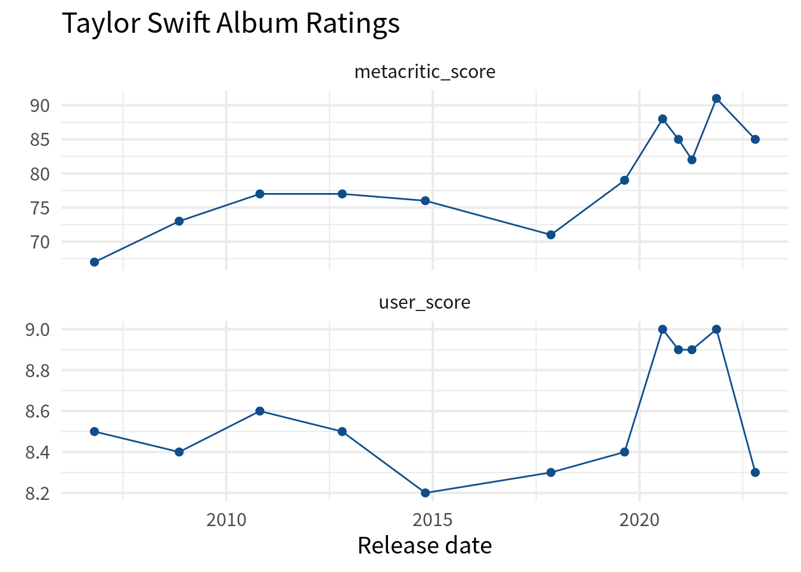

Put your data into the right format with pivot_longer() and pivot_wider()
Common wisdom tells us that data wrangling is 90% of the data work. And it’s true. Often, you will have to get your data into the right format before you can get any “real” work done. In the tidyverse, two powerful functions to help you with that are pivot_longer() and pivot_wider().
You may have already heard about these functions. If not, that’s great. We will show you everything from the basics to some more advanced tricks with these two functions. And if you’ve already worked with these functions, then chances are that you may not know about the advanced tricks that we’re about to show.
So great news: Everybody gets to enjoy this blog post. Isn’t that just peachy? Let’s dive in.
The standard but powerful use case
Let’s have a look at a data set from the weekly tidyTuesday challenge. The data of that week’s challenge is Taylor Swift albums. That’s always a fun topic. You can download it straight from GitHub like so.
Let’s try to build a chart from this. For example, we could look whether the Metacritic and user scores look similar. Here’s the line chart that we’re building:
# Facetted line chart
Now, if we want to build this with ggplot, we have to do two things in a geom_line() and a geom_point() layer:
Map the y aesthetic to a score column
Map the color aesthetic to a score_type column (Metacritic or User)
But neither of those columns exists in the data. What we have are the columns metacritic_score and user_score. Clearly, the names of these columns have the information that should go into the score_type column. And the values of those the metacritic_score and user_score columns have the information that should go into a score column.
Hence, it seems that our data has all the information we need. But it’s just not in the right format. That’s unfortunate but an all too real scenario. When you’re working with data, this happens a lot.
So let’s not despair and fix the data instead. Luckily, the tidyverse has tools for that. Here, the pivot_longer() function can rearrange our data. We just have to tell it
which columns should be rearranged,
what kind of information is in the column names and
what kind of information is in the values of each.
Basically, that’s the stuff that we’ve talked about just a few paragraphs ago. Here’s how we would wrap that paragraph into actual code. I hope you will find this is pretty much how we phrased the text earlier.
# A tibble: 24 × 5
album_name ep album_release score_type score
<chr> <lgl> <date> <chr> <dbl>
1 Taylor Swift FALSE 2006-10-24 metacritic_score 67
2 Taylor Swift FALSE 2006-10-24 user_score 8.5
3 Fearless FALSE 2008-11-11 metacritic_score 73
4 Fearless FALSE 2008-11-11 user_score 8.4
5 Speak Now FALSE 2010-10-25 metacritic_score 77
6 Speak Now FALSE 2010-10-25 user_score 8.6
7 Red FALSE 2012-10-22 metacritic_score 77
8 Red FALSE 2012-10-22 user_score 8.5
9 1989 FALSE 2014-10-27 metacritic_score 76
10 1989 FALSE 2014-10-27 user_score 8.2
# ℹ 14 more rows
Well, look at that. We have the data in exactly the format that ggplot() craves now. Check it out:
taylor_longer |>ggplot(aes(album_release, score)) +geom_line(col ='dodgerblue4') +geom_point(col ='dodgerblue4', size =2) +facet_wrap(vars(score_type), scales ='free_y', ncol =1) +theme_minimal(base_size =16, base_family ='Source Sans Pro') +labs(x ='Release date',y =element_blank(),title ='Taylor Swift Album Ratings' )

Finally, let us mention that the new data set taylor_longer has more rows than the initial taylor_albums data set. That’s why it’s usually refered to as being in a long format. Hence, the function that makes a data set longer is called pivot_longer(). Similarly, the initial data set taylor_albums is called wide.
Why the wide format then?
Sometimes it can actually be convenient to have your data in a wide format. For example, check out this table created with gt.
Taylor Swift Album Ratings
Data from TidyTuesday 2023 - Week 42
Album
Release
Score
Metacritic
User
Taylor Swift
2006-10-24
67
8.5
Fearless
2008-11-11
73
8.4
Speak Now
2010-10-25
77
8.6
Red
2012-10-22
77
8.5
1989
2014-10-27
76
8.2
reputation
2017-11-10
71
8.3
Lover
2019-08-23
79
8.4
folklore
2020-07-24
88
9.0
evermore
2020-12-11
85
8.9
Fearless (Taylor's Version)
2021-04-09
82
8.9
Red (Taylor's Version)
2021-11-12
91
9.0
Midnights
2022-10-21
85
8.3
If you want to create that table, then you need your data set to be in the wide format Just like the initial taylor_albums data set. Thus, you’d need to pass the taylor_albums data set to gt() from the gt package to create this table.
After applying styling you will get the above table. Since the styling is not really part of this blog post, we’ll not cover it. But you can take a peak at the code here:
Now imagine for a second that we only have the data set taylor_longer. In case you forgot, here’s how it looks.
taylor_longer
# A tibble: 24 × 5
album_name ep album_release score_type score
<chr> <lgl> <date> <chr> <dbl>
1 Taylor Swift FALSE 2006-10-24 metacritic_score 67
2 Taylor Swift FALSE 2006-10-24 user_score 8.5
3 Fearless FALSE 2008-11-11 metacritic_score 73
4 Fearless FALSE 2008-11-11 user_score 8.4
5 Speak Now FALSE 2010-10-25 metacritic_score 77
6 Speak Now FALSE 2010-10-25 user_score 8.6
7 Red FALSE 2012-10-22 metacritic_score 77
8 Red FALSE 2012-10-22 user_score 8.5
9 1989 FALSE 2014-10-27 metacritic_score 76
10 1989 FALSE 2014-10-27 user_score 8.2
# ℹ 14 more rows
Oh snap. We can’t pass this to gt(). This won’t look good. So instead, let’s convert this into wide format.
“How could we possibly to that?”, I can hear you asking. Well, we already know half of the answer. Remember how pivot_longer() helped us to make our table long? This function has a sibling. It’s pivot_wider() and it does exactly what you’d guess.
But it works the other way around. Instead of throwing column names like metacritic_score and user_score into a the cells of a column score_type, it reverts the process and moves the names from the values of a column to the names of a newly created column. But then pivot_wider() will also need to know how to fill these newly created columns. Therefore, you will need to tell it where the values of the new columns should come from.
Rows: 1242 Columns: 22
── Column specification ────────────────────────────────────────────────────────
Delimiter: ","
chr (1): State
dbl (21): Year, Total Employed RN, Employed Standard Error (%), Hourly Wage ...
ℹ Use `spec()` to retrieve the full column specification for this data.
ℹ Specify the column types or set `show_col_types = FALSE` to quiet this message.